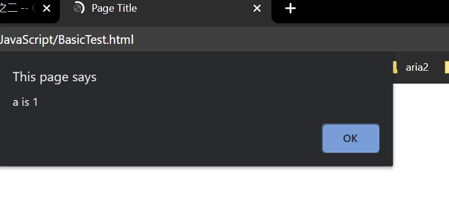

JavaScript 入门教程之三 -- Conditionals and Loops
The if Statement
在编程中，如果想要根据不同的情况执行不同的代码，可以使用 if conditional statements 状况指令来处理，语法如下：
if (condition) {
statements
}使用 if 语法来根据 condition 是否为 true 来确定是否执行 statements。下面举例说明，修改 html 文件 script 部分：
var a = 1;
if (a == 1) {
alert("a is 1");
}效果如下：

如果修改 condition 不为 true 则不会执行内部指令：
var a = 2;
if (a == 1) {
alert("a is 1");
}以上示例不会执行 alert function。
注意如果 statement 指令只有一句时，可以省略大括号，如下写法也是正确的：
var a = 1;
if (a == 1)
alert("a is 1");使用 else 申明来 condition 为 false 时执行的指令：
if (expression) {
// executed if condition is true
}
else {
// executed if condition is false
}下面举例说明：
var a = 1;
var b = 2;
if (a < b)
alert("a smaller than b");
else
alert("a is bigger than b");以上示例实现的动作也可以使用我们上一章提到的状况判断符来实现：
a < b ? alert("a smaller than b") : alert("a is bigger than b");
如果 condition 不止有两种情况要处理，可以使用 else if 申明多个情况下的指令，修改上面的示例：
var a = 2;
var b = 2;
if (a < b)
alert("a smaller than b");
else if (a == b)
alert("a equal to b");
else
alert("a is bigger than b");则会执行 alert("a equal to b"); 指令。
注意 else 在整个块中必须作为最后一个申明写在 if 和 else if 之后，如果所有 condition 的条件都不满足则会执行 else 中的申明指令。
可以根据情况使用任意多个 else if 申明。
switch
当 condition 有多个情况需要处理时，使用 else if 就会很麻烦。这时候可以使用 switch statement 来处理，语法如下：
switch (expression) {
case n1:
statements
break;
case n2:
statements
break;
default:
statements
}switch expression 会被评估一次，然后在 case 中寻找匹配的结果并执行对应块的指令。
以下是一个简单示例：
var day = 2;
switch (day) {
case 1:
document.write("today is monday");
break;
case 2:
document.write("today is tuesday");
break;
default:
document.write("today is another day");
break;
}当 day 的值为 2，则会匹配到 case 2 并执行其内的指令。
当 JavaScript 执行到 break 后会跳出 switch 块，如果不写 break 则会顺序执行下面的指令，即使不满足其他的 case 条件。通常情况下每个 case 块结尾都应该有 break。
default 关键词用来处理没有匹配到任何 case 情况，如果没有匹配到则执行 default 中的指令。如果不需要处理没有指定的 case 匹配到的情况时 default 可以被省略。
for 循环
使用 loop 循环可以多次执行一段代码，通过一些条件来控制循环次数及参数值。
JavaScript 提供三种类型的循环：for, while, 和 do while。
for 循环语法如下：
for (statement 1; statement 2; statement 3) {
code block to be executed
}- Statement 1 在循环前被执行
- Statement 2 定义执行循环的状态
- Statement 3 在每次循环后被执行
下面的示例将输出 0 - 4：
for (var i=0; i<5; i++) {
document.write(i + "<br>");
}过程为：首先给变量 i 赋值为 1，执行循环的条件是 i<5，每次循环后给 i 加 1。当 i==4 时，执行完本次循环后 i 加 1 后值为 5，不满足第二项条件就会跳出循环。
statement 1 是可选项可以不写，如：
var i = 0;
for (; i<5; i++) {
document.write(i + "<br>");
}和第一个示例效果是一样的。
statement 1 也可以同时定义多个参数，使用逗号, 来隔离，如：
for (var i=0, j=2; i<5; i++) {
document.write(i + "<br>");
}如果 statement 2 返回 true 则会执行循环块内容，如果返回 false 则会结束循环。
同样的 statement 2 也是可选项，也可以不定义，但是必须在循环块内定义 break 不然就会无线循环下去：
for (var i=0; ; i++) {
if (i >= 5)
break;
document.write(i + "<br>");
}statement 3 用来修改初始变量的值，同样也是可选项，可以在循环块内部直接修改初值：
for (var i=0; i<5 ;) {
document.write(i + "<br>");
i++;
}while 循环
while 循环也是用来实现当某个 condition 为 true 时循环一个代码块。语法如下：
while (condition) {
code block
}下面的示例将输出 0 - 10 的数字：
var i = 0;
while (i<=10) {
document.write(i + "<br>");
i++;
}当 condition 一直为 true 时，循环就会继续下去。我们应该避免无限循环情况出现。
do while 循环
do while 循环是 while 循环的一种变形，它会首先执行一次循环块然后判断 condition 条件。语法如下：
do {
code block
}
while (condition);注意 while 结尾的分号; 不能省略。
下面的示例会输出 0 - 4：
var i = 0;
do {
document.write(i + "<br>");
i++;
} while (i<5);循环块至少会执行一次，即使 condition 为 false。
break
break 指令用来跳出循环继续执行后续程序。
下面示例中，将只会输出 0 - 4 的数字：
for (var i=0; i<10 ; i++) {
if (i == 5)
break;
document.write(i + "<br>");
}在 function 中可以使用 return 来跳出当前代码块，下一章节将会介绍。
continue
continue 指令用来仅跳出当次循环，然后继续进行下一次循环。
下面示例将会输出 0- 10，但不包括 5：
for (var i=0; i<10 ; i++) {
if (i == 5)
continue;
document.write(i + "<br>");
}当 i 等于 5 时会跳出本次循环所以不会输出 5，但是会继续进行下面的循环。
标签：无